Дом 331 м² с мансардой и гаражом
Частный дом: 1-й этаж — гостиная с камином, кухня-столовая, кабинет, веранда, гараж и котельная; мансарда — четыре спальни, гардеробная, санузлы и спортзона в холле. Современное шале с эко-теплом: дуб и лиственница, натуральный камень у камина, у каждой комнаты свой цветовой акцент.

Про площадь. 331 м² в названии — площадь, заявленная заказчиком на его картинке плана. Размеры на ней не читаются, их подобрал проектировщик, и общая площадь по экспликации альбома вышла 270,67 м². Цифра уточнится после контрольного обмера.
Альбом для заказчика — проект в подаче студии: визуализации стоят перед развёртками своих помещений, у мебели на плане выноски с размерами. Полный альбом — рабочая документация для строителей: все разделы, ведомости и смета. Файлы большие — на мобильном интернете лучше качать по Wi-Fi.
Как это будет выглядеть
8 кадров из 30, принятых при сверке с макетом проекта: мебель, окна и двери стоят там же, где на чертежах. Остальные — в альбоме для заказчика, перед развёртками своих стен.
Как оставить правку голосом
Писать письма со списком замечаний не нужно — правка ставится прямо на лист, к нужному месту чертежа.
- Откройте лист
Любой лист ниже или в PDF: в альбоме на каждой странице есть кнопка «Правка к этому листу».
- Нажмите на место
На чертеже появится метка — к ней и относится правка: «диван развернуть к окну», «розетку выше».
- Скажите голосом
Или напишите. Правок к одному листу может быть сколько угодно, есть правка ко всему листу.
- Отправьте одним сообщением
Все метки уходят разом — через «Поделиться» или файлом. Альбом перевыпускается с правками.
Если голосовой ввод в браузере не работает — нажмите микрофон на клавиатуре телефона.
Что значит «проверено»
Блокеров нет
Блокер — то, с чем альбом не выдаётся: проём не помещается в стену, лист вылез за формат, жилая комната без окна. В этом альбоме таких нет.
Открытые вопросы — не брак
Кроме блокеров, проверка оставляет в выпуске вопросы и рекомендации: что уточнить на обмере, где можно лучше, какое допущение принято. Они собраны на листе «Открытые вопросы» в начале альбома — их решают вместе с заказчиком.
До обмера — предварительно
Размеры сняты с плана заказчика. Перед работами нужен контрольный обмер — в альбоме есть готовое задание на него: что именно померить и проверить.
Что внутри альбома
Шифр комплекта ГД-2026-010-АИ. Разделы идут в том же порядке, что в выданном альбоме: титульный лист и общие данные, открытые вопросы и задание на обмер, дальше разделы по специальностям, в конце — развёртки, узлы и смета.
Общие данные
6 листов
Вопросы, задание на обмер и график работ
8 листов
Архитектурные решения
7 листов
Планировочное решение
9 листов
Электрооборудование
14 листов
Отопление и вентиляция
4 листа
Водоснабжение и канализация
5 листов
Освещение
1 лист
Потолки и ГКЛ-конструкции
3 листа
Раскладка плитки
6 листов
Полы и отделка
6 листов
Цвет и материалы
4 листа
Декор и текстиль
7 листов
Встроенная мебель
16 листов
Развёртки стен, узлы и реестры
50 листов
Смета
10 листов
Что решалось на этом объекте
Планы по этажам
Каждый план выпущен отдельно для 1-го этажа и мансарды; этаж — в заголовке и штампе.
Потолки мансарды по скату кровли
Развёртки со скатом и отметкой его низа, площади стен и потолков по скату, высокая мебель под скатом проверяется отдельно.
Спортзона, гараж и веранда
Беговая дорожка и велотренажёр у конька, силовая стойка и верстак в гараже, летняя гостиная на веранде; виды сверху 3D обоих этажей.
Такой же альбом на ваш объект
Получение брифа подтверждаем в течение дня. Соседние работы — в портфолио, как устроена проверка — в разделе «Документация».
Общие данные
6 листов. Нажмите на лист — он откроется целиком, и к нему можно надиктовать правку.


Вопросы, задание на обмер и график работ
8 листов. Нажмите на лист — он откроется целиком, и к нему можно надиктовать правку.

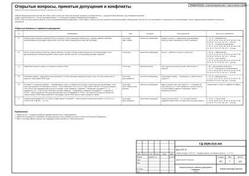
Лист 07Открытые вопросы, принятые допущения и конфликты
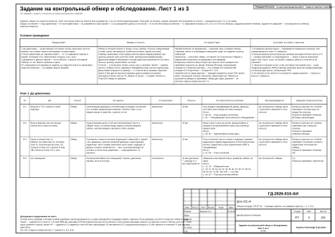
Лист 08Задание на контрольный обмер и обследование. Лист 1 из 3
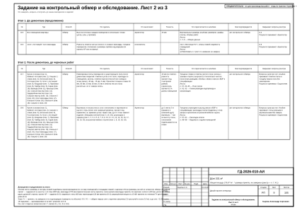
Лист 09Задание на контрольный обмер и обследование. Лист 2 из 3
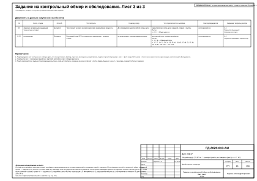
Лист 10Задание на контрольный обмер и обследование. Лист 3 из 3
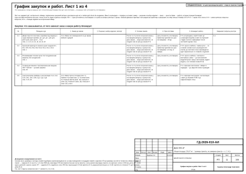
Лист 11График закупок и работ. Лист 1 из 4
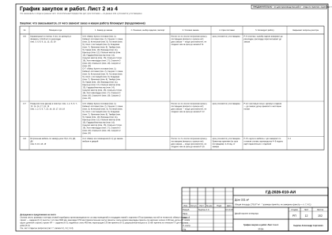
Лист 12График закупок и работ. Лист 2 из 4
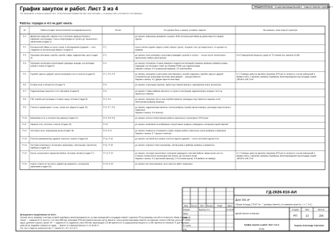
Лист 13График закупок и работ. Лист 3 из 4
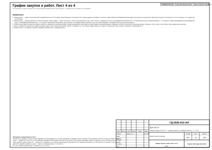
Лист 14График закупок и работ. Лист 4 из 4Архитектурные решения
7 листов. Нажмите на лист — он откроется целиком, и к нему можно надиктовать правку.

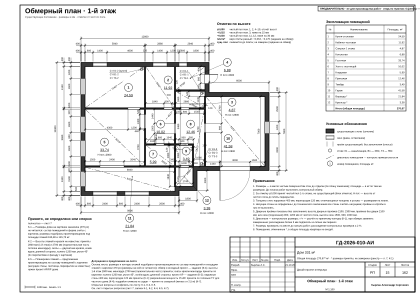
Лист 15Обмерный план · 1-й этаж
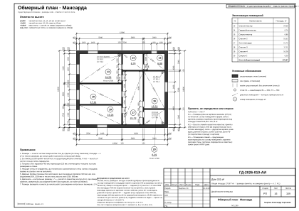
Лист 16Обмерный план · Мансарда
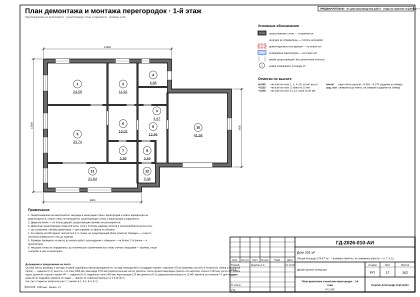
Лист 17План демонтажа и монтажа перегородок · 1-й этаж
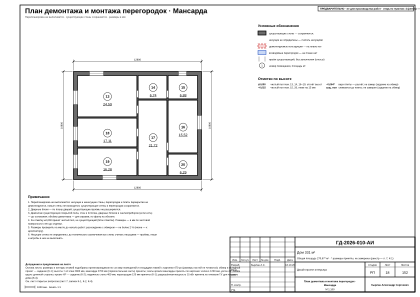
Лист 18План демонтажа и монтажа перегородок · Мансарда
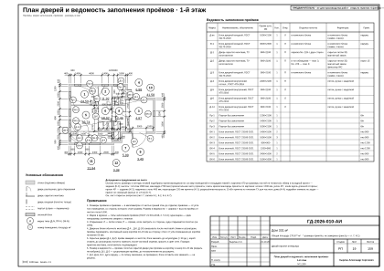
Лист 19План дверей и ведомость заполнения проёмов · 1-й этаж
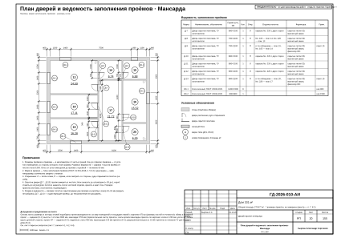
Лист 20План дверей и ведомость заполнения проёмов · Мансарда Лист 21Лестница Л-1
Лист 21Лестница Л-1
Планировочное решение
9 листов. Нажмите на лист — он откроется целиком, и к нему можно надиктовать правку.

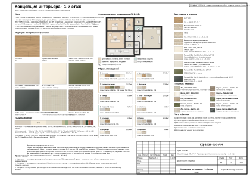
Лист 22Концепция интерьера · 1-й этаж
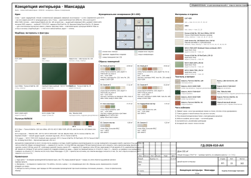
Лист 23Концепция интерьера · Мансарда
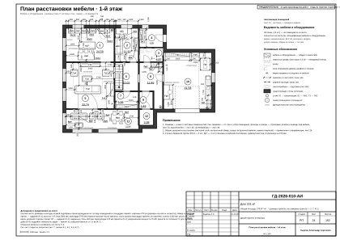
Лист 24План расстановки мебели · 1-й этаж
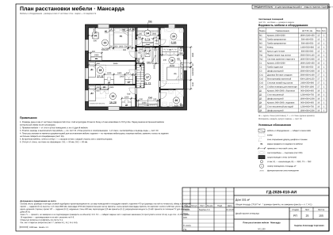
Лист 25План расстановки мебели · Мансарда
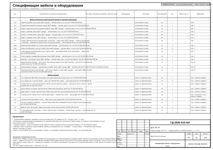
Лист 26Спецификация мебели и оборудования
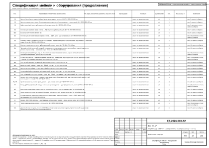
Лист 27Спецификация мебели и оборудования (продолжение)
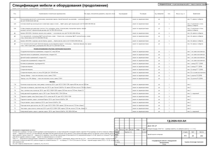
Лист 28Спецификация мебели и оборудования (продолжение)
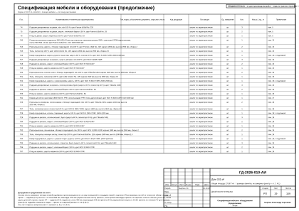
Лист 29Спецификация мебели и оборудования (продолжение)
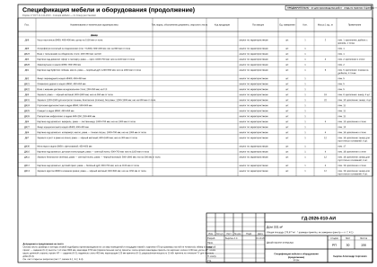
Лист 30Спецификация мебели и оборудования (продолжение)Электрооборудование
14 листов. Нажмите на лист — он откроется целиком, и к нему можно надиктовать правку.

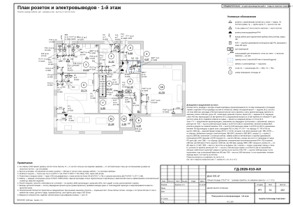
Лист 31План розеток и электровыводов · 1-й этаж
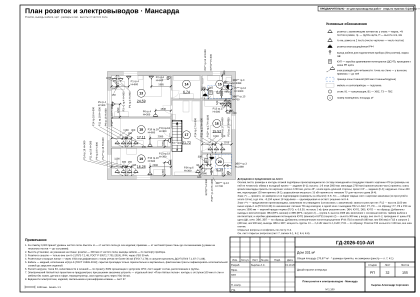
Лист 32План розеток и электровыводов · Мансарда
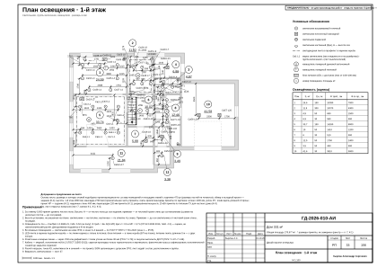
Лист 33План освещения · 1-й этаж
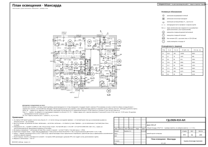
Лист 34План освещения · Мансарда
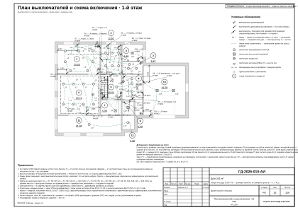
Лист 35План выключателей и схема включения · 1-й этаж
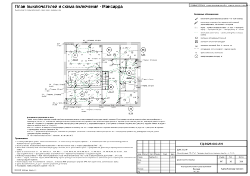
Лист 36План выключателей и схема включения · Мансарда
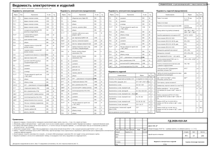
Лист 37Ведомость электроточек и изделий
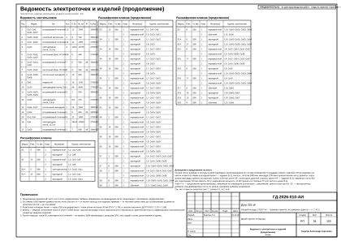
Лист 38Ведомость электроточек и изделий (продолжение)
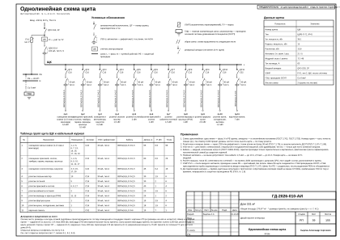
Лист 39Однолинейная схема щита
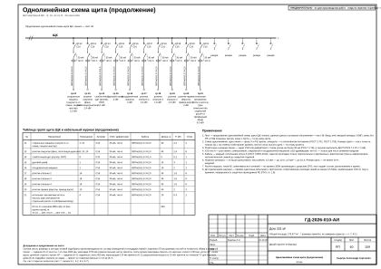
Лист 40Однолинейная схема щита (продолжение)
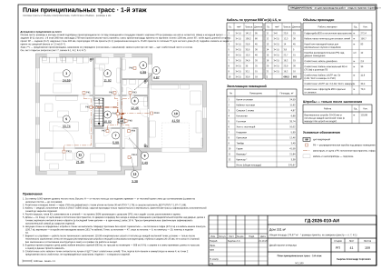
Лист 41План принципиальных трасс · 1-й этаж
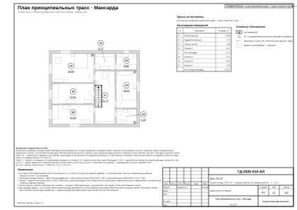
Лист 42План принципиальных трасс · Мансарда
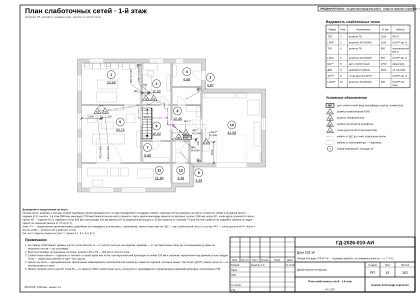
Лист 43План слаботочных сетей · 1-й этаж Лист 44План слаботочных сетей · Мансарда
Отопление и вентиляция
4 листа. Нажмите на лист — он откроется целиком, и к нему можно надиктовать правку.


Водоснабжение и канализация
5 листов. Нажмите на лист — он откроется целиком, и к нему можно надиктовать правку.


Освещение
1 лист. Нажмите на лист — он откроется целиком, и к нему можно надиктовать правку.

Потолки и ГКЛ-конструкции
3 листа. Нажмите на лист — он откроется целиком, и к нему можно надиктовать правку.


Раскладка плитки
6 листов. Нажмите на лист — он откроется целиком, и к нему можно надиктовать правку.


Полы и отделка
6 листов. Нажмите на лист — он откроется целиком, и к нему можно надиктовать правку.


Цвет и материалы
4 листа. Нажмите на лист — он откроется целиком, и к нему можно надиктовать правку.


Декор и текстиль
7 листов. Нажмите на лист — он откроется целиком, и к нему можно надиктовать правку.


Встроенная мебель
16 листов. Нажмите на лист — он откроется целиком, и к нему можно надиктовать правку.


Развёртки стен, узлы и реестры
50 листов. Нажмите на лист — он откроется целиком, и к нему можно надиктовать правку.


Смета
10 листов. Нажмите на лист — он откроется целиком, и к нему можно надиктовать правку.


Свой проект — с того же места
Бриф — около 10 минут, начать можно с рассказа голосом: размеры, фото, пожелания. Первый вариант проекта дома — до 72 часов от получения брифа с планом; предоплаты нет, альбом остаётся у вас в любом случае.
Автор проекта — дизайнер-архитектор Кырлан Александр. В основной надписи листов этих альбомов указана его фамилия; телефона и почты на листах нет — они на странице контактов.